4
Creating Topology Patterns and pin-to-trunk Routing
A topology pattern is a routing plan for a design, which is used by the pin-to-trunk router while creating routes. Use the topology options in Modgen to visualize, configure, and store the routing information.
Topology patterns comprise the following topology objects:
- Trunks: Specify the location of the routes, including their anchor points and offsets, and the routing extents.
- Twigs: Define the connections between the trunks and the devices.
- Channels: Define the routing areas in a design.
- Straps: Define the connections between multiple objects. Straps are used for specific purposes, depending on the constraints.
The following diagram depicts the use of topology objects in a topology pattern:
The pin-to-trunk router in Modgen recognizes the topology objects and their constraints, and creates geometries that match the topology pattern.
This section provides information on the following topics:
- Creating and Editing Topology Patterns
- Creating Incremental Trunks
- Adding Straps
- Adding Twigs
- Creating Single Strap Topologies
- Setting the Channel Width
- Creating Pin-to-Trunk Routes
- Copying Topology and Routing Information
- Creating Matched Groups
- Deleting Topology and Routing Information
- Defining Manual Routes
Creating and Editing Topology Patterns
Use the topology options in the Modgen Editor to visualize, configure, and store advanced routing topologies.
The Modgen Routing toolbar in the Modgen Editor provides options to create and edit topology patterns and to establish pin-to-trunk routing.
To define a new topology pattern or to edit an existing topology pattern:
-
Select the Create Trunk and Topology icon 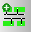
from the Modgen Routing toolbar. The Create Trunks and Topologies form is displayed.
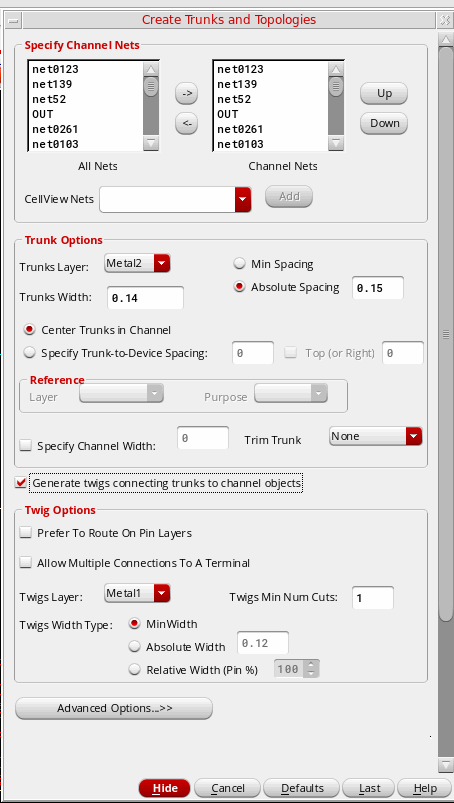 -
Use Specify Channel Nets to specify the channel nets to be included in the topology pattern. By default, all the available nets are selected. To remove nets, select the nets and move them from the Channel Nets box to the All Nets box. Use the Up and Down buttons to change the order of the channel nets. Use the CellView Nets drop-down list to add additional nets that already exist in the layout or schematic view.
-
In the Trunk Options section, specify the Trunks Layer and Trunks Width. Either specify the Min Spacing based on which the trunk spacing needs to be calculated or an Absolute Spacing value for trunks. Center Trunks in Channel is selected by default. Therefore, trunks are centered in the channel such that their distances from devices is the same from both, the top and bottom edges.
Specify the required values in the Specify Trunk-to-Device Spacing, Top (or Right), Reference, and Specify Channel Width fields.
From the Trim Trunks drop-down list, select the side from which trunks need to be trimmed while routing. For more information about these options, see Create Trunks and Topologies. -
The Generate twigs connecting trunks to channel objects check box controls whether topological twigs, which connect trunks to channel objects (instances and body contacts), are generated when creating trunks.
By default, the check box is selected, and so twigs will be generated. Use the options in the Twig Options section to customize the twigs. If the check box is cleared, twigs will not be generated. The options in the Twig Options section are disabled. -
Click Advanced Options to specify options for controlling via configurations and pin cover settings within the topology pattern. The Advanced Options section includes the following tabs:
-
Via Controls: Use the options on this tab to specify how vias need to be positioned and aligned on trunks and twigs. See Create Trunks and Topologies
for more information about these options.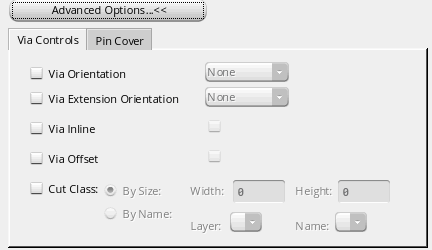 -
Pin Cover: Use the options on this tab to control the devices that cover the pin shapes. See Create Trunks and Topologies
for more information about these options.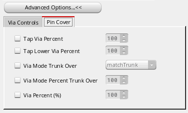
-
Via Controls: Use the options on this tab to specify how vias need to be positioned and aligned on trunks and twigs. See Create Trunks and Topologies
- Click Hide to go back to the layout canvas.
-
Click and drag in the Modgen Editor to create the topology pattern.
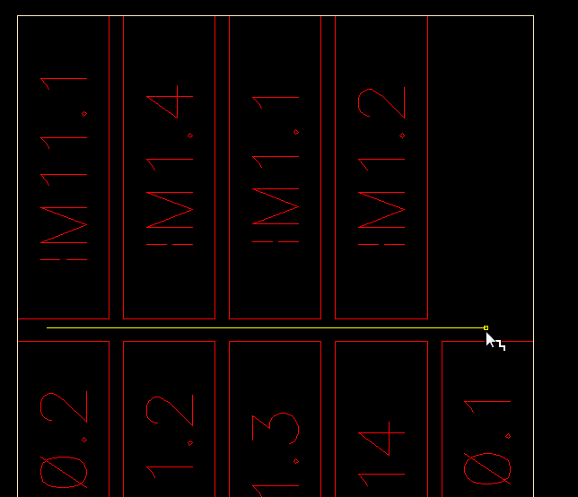
A topology pattern is created. The number of trunks in the topology pattern is the same as the number of channel nets specified in the Create Trunks and Topologies form. Twigs connect devices to the trunks.
Trunk offset references are indicated by anchors. Anchors are chained according to the defined offsets.
The anchor point is listed as a trunk property in the Property editor. When trunks are deleted, the corresponding anchors are also deleted. When trunks are moved, anchors are automatically moved and re-chained to the applicable offsets at their new locations.
- mgAddTopologyToModgen
- mgCreateMatchGroupInModgen
- mgGetTopologyFromModgen
- mgModgenHasTopology
- mgGetModgenConstraintFromTopology
- mgGetModgenFigGroupFromTopology
- mgIsTopologyInsideModgen
Creating Incremental Trunks
Use the Create Single Trunk and Topologies form to create incremental trunks, in addition to the ones created during topology creation. To create incremental trunks:
-
Choose the Create Single Trunk and Topologies icon 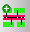
on the Modgen Routing toolbar to display the Create Single Trunk and Topologies form.
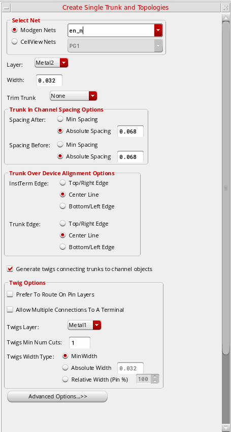 - Specify the Net, Layer, and Width of the new trunk.
- Select the side for trimming trunks from the Trim Trunk drop-down list. Available options are: None, Both, Left/Bottom, and Right/Top. The default is None, in which case trunks are not trimmed.
- In the Trunk In Channel Spacing Options section, specify the Spacing Before and Spacing After trunks and other devices.
- Use the InstTerm Edge and Trunk Edge options to specify how instance and trunk edges need to be aligned when trunks are drawn over instances.
-
The Generate twigs connecting trunks to channel objects check box controls whether topological twigs, which connect trunks to channel objects (instances and body contacts), are generated when creating trunks.
By default, the check box is selected, and so twigs will be generated. Use the options in the Twig Options section to customize the twigs. If the check box is cleared, twigs will not be generated. The options in the Twig Options section are disabled.
For more information about these options, see Create Single Trunk and Topologies.
Supported Constraint
Related SKILL Functions
Setting Local Trunks
Use the mgSetIsLocalTrunk function to identify local trunks. Trunks inside a Modgen are called local trunks. These trunks can be connected only within the same Modgen, and not from outside the Modgen. So, the global router ignores these trunks during routing.
Related SKILL function: mgGetIsLocalTrunk
Adding Straps
Straps are used to connect aligned pins within a Modgen constraint.
A strap is connected to a trunk using a twig. A strap can have multiple geometric segments.
Use the Create Strap Topologies form to define strap parameters.
- Click the Create Strap Topologies button 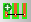on the Modgen Routing toolbar to display the Create Strap Topologies form.
- Specify the Net, Pin Layer, Strap Layer, and Strap Width.
- Specify the Max Pin Distance and Max Pin Count.
- Finally, select a Strap Direction and click OK to create the strap in the layout canvas.
For more information about the options in the Create Strap Topologies form, see Create Strap Topologies.
Supported Constraints
- numStrands: Specifies the number of strands to be used to route between pins.
- strandSpacing: Specifies the spacing between individual wire strands.
-
strandStackStyle: Specifies the layers to be used to create stranded stacks:
all(default),alternating, oradjacent. The specified layers must be part of thevalidStackLPPsconstraint list. - strandWidth: Specifies the width of individual wire strands.
-
strapLocation: Specifies whether the strap must be placed under a trunk. The strap must be set as valid targets for
strandSpacing,strandStackStyle,strandWidth, andvalidStackLPPs. - validStackLPPs: Specifies the layers to be used in the stranded stacks.
Related SKILL Functions
- mgGetStrapDirection
- mgGetStrapHasDirection
- mgGetStrapHasOffset
- mgGetStrapOffset
- mgGetStrapLongOffset1
- mgGetStrapLongOffset2
- mgSetStrapDirection
- mgSetStrapHasDirection
- mgSetStrapHasOffset
- mgSetStrapLongOffset1
- mgSetStrapLongOffset2
- mgSetStrapOffset
Adding Twigs
Twigs are important components of a topology design. They define the connections between the trunk and other components, such as another trunk, net, strap, or instance. In the following example, a twig is used to establish the connection between: strap --> trunk --> pin.
Typically you define twigs while creating the topology. The Create Trunks and Topologies form provides options for defining twigs.
It is possible that certain twigs were deleted from the design accidentally. In such situations, you can recreate the twigs using the Add/Replace Twig Topologies form. You can also use this form to create incremental twigs or to modify existing twigs.
You can use the Add / Replace Twig Topologies command to customize the topology of a Modgen by editing existing twigs and by adding new twigs. To create new twigs:
- Select the instances, body contacts, trunks, or nets that need to be connected. Then, click the Add / Replace Twig Topologies button 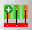on the Modgen Routing toolbar to display the
-
In the Filter Options section:
-
Specify the Source or Target Terminals and Search Direction. You can select multiple terminals.
- Select the appropriate Search Direction options to indicate the direction along which the connections need to be made. You can select one or more search directions: Up, Down, Left, Right, or Over Device. Over Device indicates that a twig must be created for a trunk located over the device or pin, which connects the trunk to an overlapping pin on the same net.
- You can choose to Replace Existing Twigs with the new ones.
- You can choose to Allow Multiple Connections To A Terminal to enable multiple trunk connections to a terminal.
-
Specify the Source or Target Terminals and Search Direction. You can select multiple terminals.
-
In the Twig Options section, specify the twig parameters:
- Select Prefer to Route On Pin Layers to indicate that routing should be done on the pin layers instead of the drawing layers.
- In the Twigs Layer field, specify the layer on which the twigs need to be created.
- Specify the minimum number of cuts that the vias connecting the twigs to other objects need to have.
- Choose a suitable Twigs Width Type.
- Click Advanced Options to specify options for controlling via configurations and pin cover settings within the topology pattern. The Advanced Options section includes the following tabs:
For more information about these options, see Add/Replace Twig Topologies.
Creating Single Strap Topologies
Use the options in the Create Single Strap Topology form to define straps between individual pins. Pins can be strapped in Modgen only if the following conditions are met:
- The pins must be on the same layer.
- The pins must be aligned to the top and bottom rows of the channel.
To to define straps between individual pins:
-
Display the Create Single Strap Topology
form by clicking the Create Single Strap Topology button 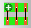 on the Modgen Routing toolbar.
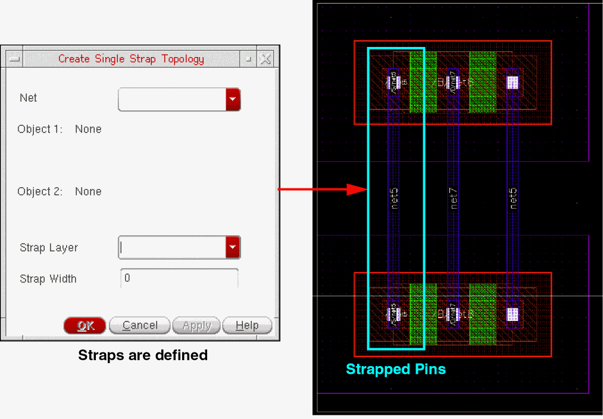 - Specify the Net on which the straps need to be created.
- Specify the objects, which are the names of the pins that need to be strapped during pin-to-trunk routing and their instances in the respective fields.
- Specify the Strap Layer and Strap Width.
- Click OK to create the strap in the layout canvas.
For more information about these options, see .
Setting the Channel Width
Modgen provides multiple ways of setting the routing channel width.
- Using the Create Trunks and Topologies form: Specifies the channel width while defining a new topology pattern.
- Using the Create Single Trunk and Topologies form: Specifies the channel width while creating an incremental trunk for a topology.
- Using the Set the Channel Width form: Specifies the channel width before or after creating trunks. The channel width indicates the distance from either a device row to another device row, or a trunk to a device row.
The following section describes the procedure to set the routing channel width using the Set Channel Width form.
To specify the routing channel width values using the Set Channel Width form:
-
Select the Set Channel Width icon 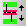
on the Modgen Routing toolbar. The Set Channel Width form displays.
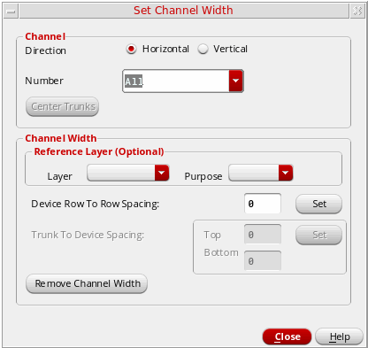 - In the Channel section, choose a Direction:
-
Specify the Channel Number for which the direction and width values need to be set. The corresponding channel is highlighted in the layout canvas.
When the direction is set to Horizontal, Number refers to the row number. Row number 0 refers to the channel below Modgen, row number 1 indicates the first channel, row number 2 indicates the second channel, and so on.
When the direction is set to Vertical, Number refers to the column number. Column number 0 refers to the channel to the left of Modgen, column number 1 indicates the first channel to the right, column number 2 indicates the second channel to the right, and so on.
The value All indicates all the routing channels in the given direction.
If the direction and width values are already set for a channel, then these values are displayed in the respective fields. You can modify the values. -
Click Center Trunks to center trunks in the selected channel.
-
Select the Layer and Purpose of the topological trunk that must be anchored to an instance. The bounding box of the specified layer and purpose inside the instance is used to determine the device reference edge for setting the channel width. In other words, the channel width is the edge-to-edge spacing between the bounding boxes of the associated instances.
- Specify the channel width. For Horizontal direction, the channel width indicates the Device Row To Row Spacing; and for Vertical direction, the channel width indicates the Device Column To Column Spacing.
- Click Set to save the channel width value.
- Specify the Trunk to Device Spacing. This is an alternative way to specify the channel by specifying the distance between the trunks in the channel and the devices. Top is the spacing between the top edge of the top trunk to the bottom edge of the top device. Bottom is the spacing between the bottom edge of the bottom trunk to the top edge of the bottom device.
- Click Set to save the trunk-to-device spacing value.
- Click Close to close the form.
At any point, you can click Remove Channel Width to remove the channel width setting for the specified channel.
For more information, see .
Creating Pin-to-Trunk Routes
Select the Generate Routing from Topology button 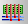 from the Modgen Routing toolbar to establish pin-to-trunk connections between the terminals.
Use the Display/Hide Topology Objects button to view or hide the topology pattern. By hiding the topology pattern, you can view only the routes.
Copying Topology and Routing Information
When working on multi-row patterns, you can choose to copy the selected trunk topologies. While copying trunk topologies, the original configuration of the trunks is preserved. If a trunk located over a device is copied, then the new trunk will also be placed over the same device.
-
Select the Copy Trunks Topologies button 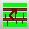
from the Modgen Routing toolbar to display the Copy Topologies form.
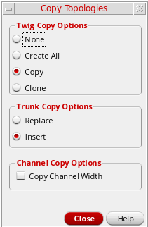 -
Choose the required twig copy option: None, Create All, Copy, or Clone.
- Select the required Trunk Copy Options: Replace or Insert.
-
Choose Copy Channel Width to copy the channel width of the source trunks to the channel where the new trunks are placed.
- Click Close.
- If the source and destination channels are the same, then the matched trunks are added to the same matched group as the source.
- If trunks are copied to a different channel, then a new matched group is created at the target location with the new (copied) trunks as members. If only a few members of a matched group (more than one) are copied, then a new group is created with only the copied trunks as members. However, if only a single trunk that is part of a matched group is copied, then no group is created.
For more information about matched groups, see Creating Matched Groups.
For more information, see .
Creating Matched Groups
A matched group is a set of topological trunks for which the specified properties (or match types) are the same. Creating a matched group helps maintain the same timing and resistance for all trunks within the set. Matched groups are stored in the Modgen storage.
The match type defines how the router modifies the trunk geometry to successfully match the selected trunks. You can create matched groups by matching twig geometries, trunk geometries, or both.
The available match types for twigs are:
- none: No matching is done. This option lets you create a matched group by matching only the trunk geometries.
- lengthenOnly: Matching is done by lengthening the geometries associated with the twigs.
- widenOnly: Matching is done by widening the geometries associated with the twigs.
- lengthenFirst: Matching is done by first attempting to lengthen the geometries. If that is unsuccessful, then the geometries are widened.
- widenFirst: Matching is done by first attempting to widen the geometries. If that is unsuccessful, then the geometries are lengthened.
The available match types for trunks are:
- none: No matching is done. This option lets you create a matched group by matching only the twig parameters.
- matchLength: Matching is done by adjusting the length of the selected trunks such that they are equal.
- Select the required trunks.
- Click the Match Nets button on the Modgen Routing toolbar.
- Select Create Match Group from Selected Trunks. The Matched Group form is displayed. You can also right-click and select Create Matched Group from Selected Trunks.
- Select the required Twigs match type.
-
Select the required Trunks match type.
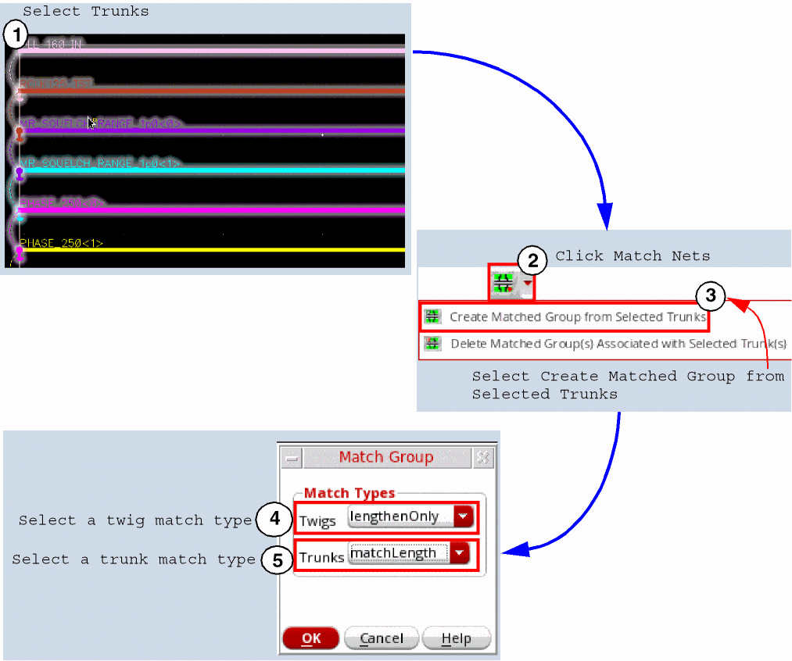 -
Click OK. The matched groups are displayed as shown below.
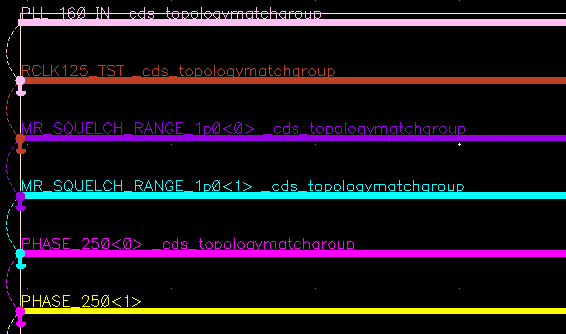
The selected trunks are grouped into a matchGroup.
To remove a trunk from its matchGroup, select the trunk, right-click, and select Remove Selected Trunk(s) from Matched Group(s).
To highlight all trunks that belong to a particular matched group, select a trunk that belongs to the matched group, right-click, and select Highlight Matched Group Members of Selected Trunk(s).
-
Select a trunk that is part of the
matchGroup. - Click the Match Nets button on the Modgen Routing toolbar.
- Select Delete Matched Group(s) Associated with Selected Trunk(s). Alternatively, you can right-click and select Delete Matched Group(s) associated with Selected Trunk(s).
- mgCreateMatchGroupInModgen
- mgObjectHasMatchGroup
- mgGetMatchGroupMembers
- mgDestroyMatchGroupOnObject
- mgRemoveMemberFromMatchGroup
Deleting Topology and Routing Information
- Select the Delete All Topology and Routing button 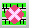 from the Modgen Routing toolbar to delete all routing geometry and all topology in the Modgen.
-
Select the Delete All Trunks, Topologies, and Routing in Channel button 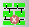
from the Modgen Routing toolbar and draw a line (horizontal or vertical) in the desired channel to select the topology to be deleted. The selected topology is deleted from the specific channel without disturbing the settings of other channels.
Related SKILL Function: mgRemoveTopologyFromModgen - Select the Delete All Strap Topologies and Routing button 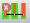 from the Modgen Routing toolbar to delete only the strap topologies and related routing information.
- Select the Delete All Twig and Strap Routing button 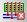 from the Modgen Routing toolbar to delete only the routes.
Using the Insert Mode
The Insert mode can be used to specify the trunk deletion behavior. Use the environment variable to switch ON (set to t) the Insert mode. Default is nil.
-
When the Insert Mode is turned OFF (default): When a trunk is deleted, the existing trunks remain at their original positions even when some trunks are deleted.
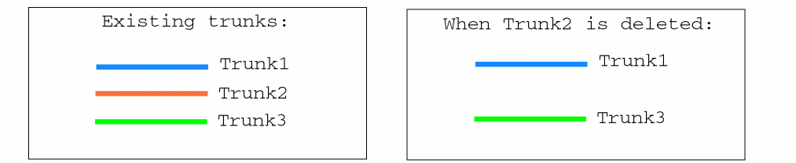 -
When the Insert Mode is turned ON: When a trunk is deleted, the positions of the remaining existing trunks are adjusted so that the distances between the trunks remain the same.
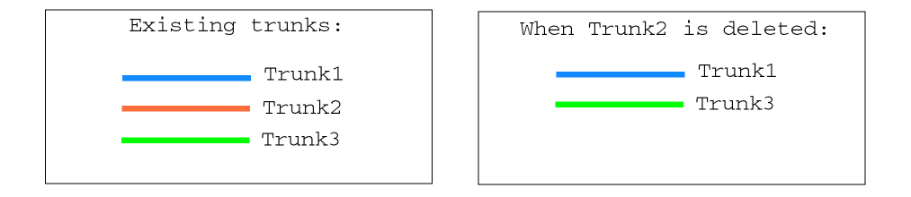Here, when Trunk2 is deleted, the spacing between Trunk3 and Trunk1 is adjusted to be equal to the original offset from Trunk2 to Trunk3
Defining Manual Routes
After creating pin-to-trunk routes, you can make a few manual edits to the Modgen without disabling the Modgen.
Use the Enable Hand Routing command to enter the manual editing mode. After making the required modifications, the Modgen constraint automatically regenerates.
For example, after establishing pin-to-trunk routes, you can create additional routes manually.
-
Select the Enable Hand Routing button
from the Modgen Routing toolbar.
Environment Variable: modgenPToTOnCreateFigMode - Display the Create toolbar by right-clicking the title bar and selecting Toolbars–Create.
- Select the Create Wire 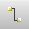 icon.
- Click to indicate the first point of the wire.
- Continue to click at subsequent points of the wire.
-
Press Return or double-click to end the wire.
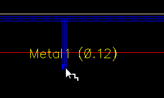
The Modgen automatically regenerates after the edit.
Return to top